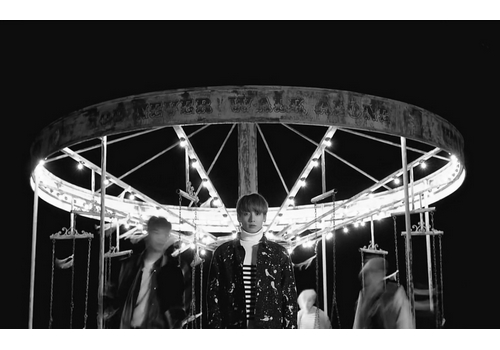
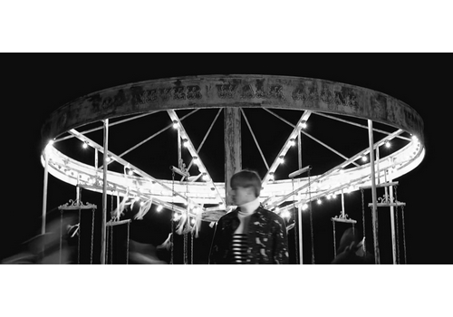
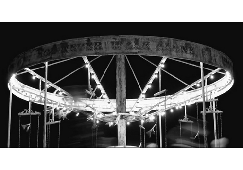

MoPA
Informations
Lieux & horaires
Conseils pour la visite
Accessibilité
Actuellement
Evenements
Expositions
Films
Performances
Historique des expositions
Art & Artistes
Collections
Artistes
Bienvenue au Musée de l'Art de la Photographie !
  
La disparition © Nam Hyun Woo
‹‹ Regardez vers les étoiles et pas vers vos pieds. Essayez de donner un sens à ce que vous voyez, et demandez-vous ce qui fait que l'univers existe. Soyez curieux. ››
Stephen Hawking
En la mémoire de Stephen Hawking,
liste